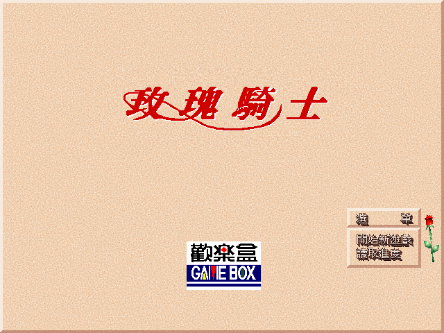
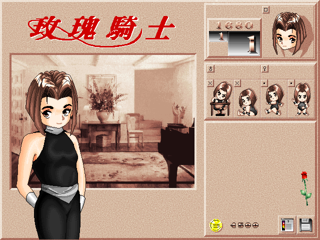

名稱：玫瑰騎士 (Rose Knight，中文版) 簡介：韓國Sailon 1996年出品的養成遊戲，由歡樂盒中文化並代理發行 [待補]。

保護：光碟（1999年版已去除保護），原始光碟版破解碼為： ROSE.EXE 75 4D C7 05 EB -- -- -- 或 E0 E8 5B A8 00 -- B8 A8 36 67 備註：1999年Win光碟版，底子其實仍是DOS版，可以在Windows安裝後，再到DOS上執行（其 內容和磁片版完全相同，除了LOGO顯示的相關檔案外）。 備註：放入光碟時，會自動播放音軌，此時要設定音樂為關，否則會變成雙重背景音樂。